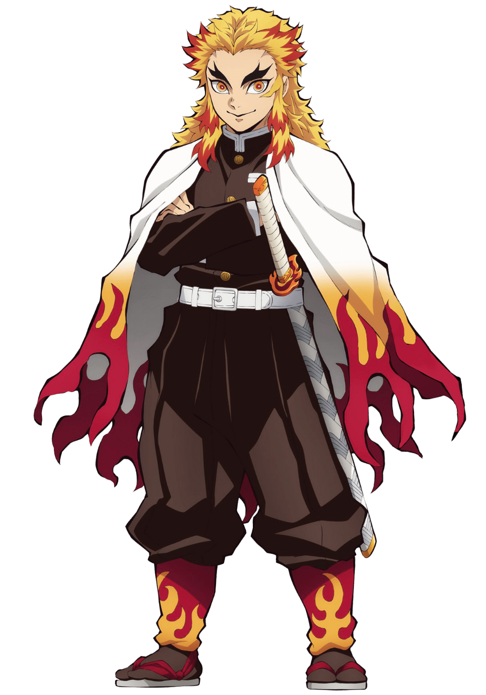

Home
Sobre mim
Currículo
Curriculo
Apresentação e informações especiais
Experiências
Frozilog Logística (2020 - 2022) - Auxiliar administrativo.
Amazom (2023 - até o momento) - auxiliar de logística
Estudos
Formação em HTML e CSS - Alura
